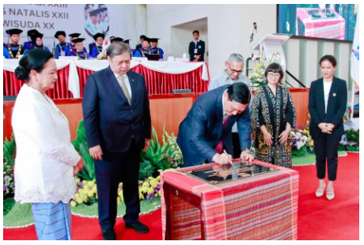
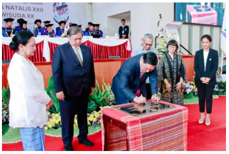

Wisuda 398 Lulusan Institut Teknologi Del
Pada Hari Sabtu 23 September 2023, Institut Teknologi Del melaksanakan Wisuda untuk 398 Mahasiswa
Sarjana dan Diploma. Turut hadir Bapak Dr. Honoris Causa Ir. Airlangga Hartarto, MBA, MMT (Menteri
Koordinator Bidang Perekonomian Republik Indonesia), Bapak Rionald Silaban (Direktorat Jendral
Kekayaan Negara), Bapak Jend. TNI (Purn.) Luhut Binsar Pandjaitan, M.P.A (Ketua Pembina Yayasan
Del), Ibu Intan Simanjuntak (Ketua Pengurus Yayasan Del), dan tamu undangan lainnya. Kegiatan Wisuda
ini dilaksanakan di Gedung Serba Guna Yayasan Del dengan tema “Fostering Collaboration and
Innovation towards Research Excellence”.
Pada Wisuda tahun ini terdapat sebanyak 398 wisudawan dan wisudawati yang terdiri dari 51
mahasiswa dari jurusan D3 Teknologi Informasi, 47 mahasiswa dari jurusan D3 Teknologi Komputer, 64
mahasiswa dari jurusan D4 Teknologi Rekayasa Perangkat Lunak, 66 mahasiswa dari jurusan S1
Informatika, 71 mahasiswa dari jurusan S1 Sistem Informasi, 35 mahasiswa dari jurusan S1 Teknik
Elektro, 44 mahasiswa dari jurusan S1 Manajemen Rekayasa, dan 20 mahasiswa dari jurusan S1 Teknik
Bioproses.
Prof. Stella Cristie, Ph.d (Tsinghua University) dalam kesempatan ini memberikan Orasi Ilmiah kepada
para Wisudawan. Beliau menyampaikan kepada para wisudawan bahwa kehidupan selanjutnya adalah problem
solving series yaitu fase yang harus dapat menganalisa atau memahami persoalan – persoalan yang ada
serta bisa menyelesaikan persoalan tersebut secara sistematis dan sampai selesai. Karena setiap
persoalan ataupun masalah pasti memiliki lebih dari satu jalan keluar. Terakhir beliau berpesan
kepada wisudawan “Waktu anda memulai perkuliahan begitu bangganya anda bisa berkuliah di IT Del,
sekarang IT Del yang bangga kepada kalian.”
Pada kesempatan ini Menteri Koordinator Bidang Perekonomian Dr. (H.C.) Ir. Airlangga Hartarto,
M.B.A., M.M.T, memberikan ucapan selamat kepada wisudawan dan menyampaikan bahwa wisuda adalah hari
bersejarah karena setelah ini akan terjun ke masyarakat secara langsung. Dalam sambutannya beliau
juga memaparkan terkait pertumbuhan ekonomi di Indonesia yang akan terus positif dan sudah termasuk
ke dalam upper – middle income country, untuk itu diharapkan kedepannya alumni dari IT Del dapat
berperan dalam pembangunan Indonesia menuju Indonesia Emas (Maju, Mandiri, Sejahtera).
 
Sebagai Pembina Yayasan Del yang sangat mendukung dunia Pendidikan, Bapak Luhut Pandjaitan selalu
berpesan kepada mahasiswa IT Del agar tidak hanya soal pintar tetapi juga dengan hati. “Selamat
bertugas, permulaan dari suatu perjalanan yang panjang buat kalian yang telah menyelesaikan studinya
di IT Del.” pesan Beliau.
Pada kegiatan ini juga berlangsung penandatanganan prasasti Laboratorium Keamanan Siber oleh
Bapak Menteri Koordinator Bidang Perekonomian Dr. (H.C.) Ir. Airlangga Hartarto, M.B.A., M.M.T dan
Bapak Jend. TNI (Purn.) Luhut Binsar Pandjaitan, M.P.A (Ketua Pembina Yayasan Del). Besar harapannya
dengan keberadaan Laboratorium ini dapat mendukung IT Del dalam menciptakan talent-talent baru dalam
bidang keamanan siber di Indonesia.